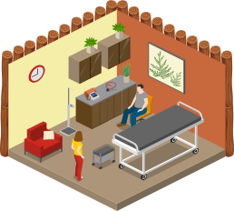
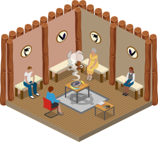
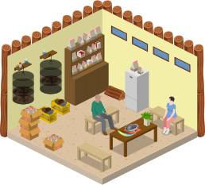

Brief
First Nations Health Authority (FNHA) launched the First Nations-led Primary Care Initiative which aims to develop around 15 Primary Care Centres across B.C. to improve access to health and wellness services that are culturally safe and closer to home for First Nations communities. Two of the centres are in operation and the rest are in the development pipeline. FNHA would like to promote the facilities and services of the centres without having patients physically travel there, which often requires a considerable amount of time and travelling costs. Read the full announcement here.
-
Timeline
May - August 2024 (12 weeks)
-
My Role
Graphic Designer
-
Team
Lorin L., Project Manager
Ruby H., Developer
Shuying Z., UIUX Designer
-
Contribution
▪ Conducted user Research
▪ Refined the design concept
▪ Graphic Design
▪ Implemented the side panel features
-
Tools
Illustrator
Photoshop
SketchUp
Github
-
Client
Problems
Based on the research, the problem statement is concluded as “How do we present and promote the Primary Care Centres so that the First Nations communities feel safe and respected to interact with the service?”
Goals
1. Creating a digital platform highlights the facilities and services that improve First Nations patients’ healthcare experiences.
2. Promoting the facilities and services of the centres.
Research
We researched some interactive products for inspiration. Here are my key findings:
1. These products focus on telling a story, using simple visuals to pull users into the experience.
2. Designs often have flat, clean visuals, making it easier to use and understand.
Moodboard
One Moodboard I created is what I call the City Guide Map style. The layout features an isometric perspective, with muted colors contrasted by highly saturated hues, creating a striking visual effect.
The other Moodboard follows a Minimalist style. It’s organized, structured, and simple, with illustrations that use a monochromatic or limited color palette and clean lines.
Prototype
The map is a Vancouver-inspired island shape with an isometric layout to create a sense of immersion.

Illustrations
Using BC signature animals like salmon, orca, and bear creates a subtle connection. Additionally, incorporating cedar logs, cedar leaves, and a simulated medicine wheel pattern as decorations reflects First Nations' culture.
The room graphics were designed to reflect the reality at FNPCCs with Lu’ma.
Examination Room
Healing Room
Medcine Room
Pharmacy

Consulting Room
Inside the room, more detailed graphics are displayed. By hovering over hotspots on the images, users can learn about the facilities and services from centres.
Reflection
I'm proud to have contributed to such a meaningful initiative with my team. Despite our small size, my teammates provided invaluable support throughout the process. A significant challenge was working based on assumptions until Sprint 6 when we visited Luma, requiring adaptability to keep the project moving forward. I'm thrilled with the final outcome—an interactive website that will promote the centres effectively. The experience taught me to navigate uncertainty and adapt to new information quickly. While I'm satisfied with our achievements, if given more time, I would refine the remaining graphics to further enhance the project. Overall, this experience has been rewarding, allowing me to grow professionally while creating something of real-world value.